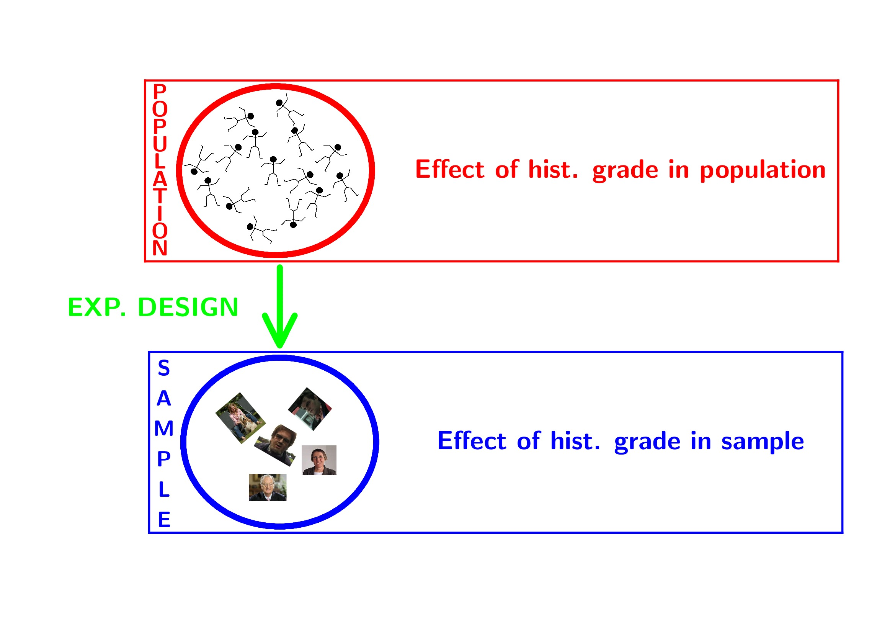
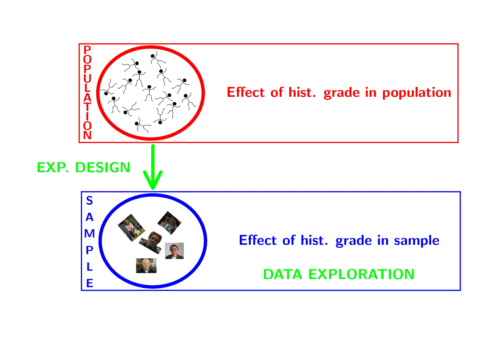
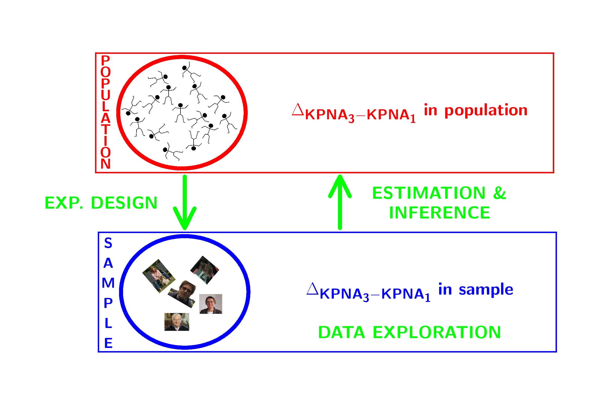
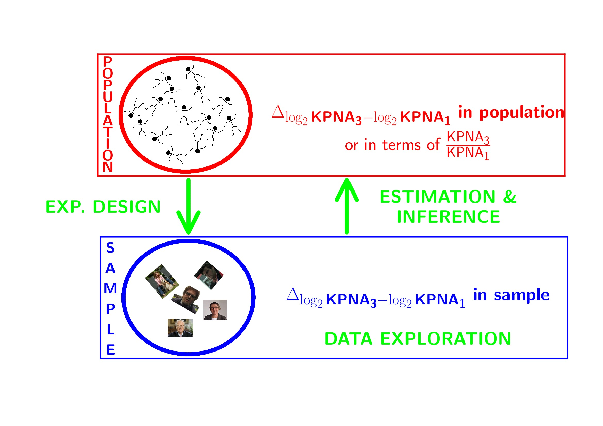

This is part of the online course Statistical Genomics 2022 (SGA)
1 Breast cancer example
- part of study https://doi.org/10.1093/jnci/djj052)
- Histologic grade in breast cancer clinically prognostic. Association of histologic grade on expression of KPNA2 gene that is known to be associated with poor BC prognosis.
- Population: all current and future breast cancer patients





2 Data Exploration
2.1 Import
## ── Attaching packages ─────────────────────────────────────── tidyverse 1.3.2 ──
## ✔ ggplot2 3.3.6 ✔ purrr 0.3.4
## ✔ tibble 3.1.7 ✔ dplyr 1.0.9
## ✔ tidyr 1.2.0 ✔ stringr 1.4.1
## ✔ readr 2.1.2 ✔ forcats 0.5.1
## ── Conflicts ────────────────────────────────────────── tidyverse_conflicts() ──
## ✖ dplyr::filter() masks stats::filter()
## ✖ dplyr::lag() masks stats::lag()gene <- read.table("https://raw.githubusercontent.com/statOmics/SGA21/master/data/kpna2.txt",header=TRUE)
head(gene)We will transform the variable grade and node to a factor
2.2 Summary statistics
geneSum <- gene %>%
group_by(grade) %>%
summarize(mean = mean(gene),
sd = sd(gene),
n=length(gene)
) %>%
mutate(se = sd/sqrt(n))
geneSum2.3 Visualisation
We can also save the plots as objects for later use!
p1 <- gene %>%
ggplot(aes(x=grade,y=gene)) +
geom_boxplot(outlier.shape=NA) +
geom_jitter()
p2 <- gene %>%
ggplot(aes(sample=gene)) +
geom_qq() +
geom_qq_line() +
facet_wrap(~grade)
p1
2.4 Research questions
Researchers want to assess the association of the histological grade on KPNA2 gene expression
3 Statistical Inference
- Researchers want to assess the association of histological grade on KPNA2 gene expression
- Inference?

- Researchers want to assess the association of histological grade on KPNA2 gene expression
- Inference?
- testing + CI $ $ Assumptions
In general we start from alternative hypothese \(H_A\): we want to show an association
Gene expression of grade 1 and grade 3 patients is on average different
But, we will assess it by falsifying the opposite:
The average KPNA2 gene expression of grade 1 and grade 3 patients is equal
How likely is it to observe an equal or more extreme association than the one observed in the sample when the null hypothesis is true?
When we make assumptions about the distribution of our test statistic we can quantify this probability: p-value.
If the p-value is below a significance threshold \(\alpha\) we reject the null hypothesis
We control the probability on a false positive result at the \(\alpha\)-level (type I error)
- The p-value will only be calculated correctly if the underlying assumptions hold!
##
## Attaching package: 'gridExtra'## The following object is masked from 'package:dplyr':
##
## combine##
## Welch Two Sample t-test
##
## data: gene by grade
## t = -7.2132, df = 15.384, p-value = 2.598e-06
## alternative hypothesis: true difference in means between group 1 and group 3 is not equal to 0
## 95 percent confidence interval:
## -425.4218 -231.6751
## sample estimates:
## mean in group 1 mean in group 3
## 232.5003 561.0487effectSize <- effectSize %>%
mutate(t.stat=delta/seDelta) %>%
mutate(p.value= pt(-abs(t.stat),21.352)*2)
effectSize- Intensities are often not normally distributed and have a mean variance relation
- Commonly log2-transformed
- Differences on log scale:
\[ \log_2(B) - \log_2(A) = \log_2 \frac{B}{A} = \log_2 FC_{\frac{B}{A}} \]

3.1 Log transformation
gene <- gene %>%
mutate(lgene = log2(gene))
p1 <- gene %>%
ggplot(aes(x=grade,y=lgene)) +
geom_boxplot(outlier.shape=NA) +
geom_jitter()
p2 <- gene %>%
ggplot(aes(sample=lgene)) +
geom_qq() +
geom_qq_line() +
facet_wrap(~grade)
p1##
## Two Sample t-test
##
## data: lgene by grade
## t = -8.0455, df = 22, p-value = 5.372e-08
## alternative hypothesis: true difference in means between group 1 and group 3 is not equal to 0
## 95 percent confidence interval:
## -1.610148 -0.950178
## sample estimates:
## mean in group 1 mean in group 3
## 7.808478 9.088641## mean in group 3
## 1.280163## g3-g1
## 2.4286643.2 Conclusion
There is a extremely significant association of the histological grade on the gene expression in tumor tissue. On average, the gene expression for the grade 3 patients is 2.43 times higher than the gene expression in grade 1 patients (95% CI [1.93, 3.05], \(p<<0.001\)).


The patients also differ in the their lymph node status. Hence, we have a two factorial design: grade x lymph node status!!!
Solution??

4 General Linear Model
How can we integrate multiple factors and continuous covariates in linear model.
\[ y_i= \beta_0 + \beta_1 x_{i,1} + \beta_2 x_{i,2} + \beta_{12}x_{i,1}x_{i,2}+\epsilon_i, \] with
- \(x_{i,1}\) a dummy variable for histological grade: \(x_{i,1}=\begin{cases} 0& \text{grade 1}\\ 1& \text{grade 3} \end{cases}\)
- \(x_{i,2}\) a dummy variable for : \(x_{i,2}=\begin{cases} 0& \text{lymph nodes were not removed}\\ 1& \text{lymph nodes were removed} \end{cases}\)
- \(\epsilon_i\)?
4.1 Implementation in R
##
## Call:
## lm(formula = gene ~ grade * node, data = gene)
##
## Residuals:
## Min 1Q Median 3Q Max
## -201.748 -53.294 -6.308 46.216 277.601
##
## Coefficients:
## Estimate Std. Error t value Pr(>|t|)
## (Intercept) 180.51 44.37 4.068 0.0006 ***
## grade3 401.33 62.75 6.396 3.07e-06 ***
## node1 103.98 62.75 1.657 0.1131
## grade3:node1 -145.57 88.74 -1.640 0.1166
## ---
## Signif. codes: 0 '***' 0.001 '**' 0.01 '*' 0.05 '.' 0.1 ' ' 1
##
## Residual standard error: 108.7 on 20 degrees of freedom
## Multiple R-squared: 0.7437, Adjusted R-squared: 0.7052
## F-statistic: 19.34 on 3 and 20 DF, p-value: 3.971e-06
4.3 Breast cancer example
- Paper: https://doi.org/10.1093/jnci/djj052
- Histologic grade in breast cancer provides clinically important prognostic information. Two factors have to be concidered: Histologic grade (grade 1 and grade 3) and lymph node status (0 vs 1). The researchers assessed gene expression of the KPNA2 gene a protein-coding gene associated with breast cancer and are mainly interested in the association of histological grade. Note, that the gene variable consists of background corrected normalized intensities obtained with a microarray platform. Upon log-transformation, they are known to be a good proxy for the \(\log\) transformed concentration of gene expression product of the KPNA2 gene.
- Research questions and translate them towards model parameters (contrasts)?
- Make an R markdown file to answer the research questions
library(ExploreModelMatrix)
explMx <- VisualizeDesign(gene,designFormula = ~grade*node)
explMx$plotlist## [[1]]You can also explore the model matrix interactively:
5 Linear regression in matrix form
5.1 Scalar form
- Consider a vector of predictors \(\mathbf{x}=(x_1,\ldots,x_p)^T\) and
- a real-valued response \(Y\)
- then the linear regression model can be written as \[ Y=f(\mathbf{x}) +\epsilon=\beta_0+\sum\limits_{j=1}^p x_j\beta_j + \epsilon \] with i.i.d. \(\epsilon\sim N(0,\sigma^2)\)
5.2 Matrix form
- \(n\) observations \((\mathbf{x}_1,y_1) \ldots (\mathbf{x}_n,y_n)\)
- Regression in matrix notation \[\mathbf{Y}=\mathbf{X\beta} + \mathbf{\epsilon}\] with \(\mathbf{Y}=\left[\begin{array}{c}y_1\\ \vdots\\y_n\end{array}\right]\), \(\mathbf{X}=\left[\begin{array}{cccc} 1&x_{11}&\ldots&x_{1p}\\ \vdots&\vdots&&\vdots\\ 1&x_{n1}&\ldots&x_{np} \end{array}\right]\), \(\mathbf{\beta}=\left[\begin{array}{c}\beta_0\\ \vdots\\ \beta_p\end{array}\right]\) and \(\mathbf{\epsilon}=\left[\begin{array}{c} \epsilon_1 \\ \vdots \\ \epsilon_n\end{array}\right]\)
5.3 Least Squares (LS)
- Minimize the residual sum of squares \[\begin{eqnarray*} RSS(\mathbf{\beta})&=&\sum\limits_{i=1}^n e^2_i\\ &=&\sum\limits_{i=1}^n \left(y_i-\beta_0-\sum\limits_{j=1}^p x_{ij}\beta_j\right)^2 \end{eqnarray*}\]
- or in matrix notation \[\begin{eqnarray*} RSS(\mathbf{\beta})&=&(\mathbf{Y}-\mathbf{X\beta})^T(\mathbf{Y}-\mathbf{X\beta})\\ &=&\Vert \mathbf{Y}-\mathbf{X\beta}\Vert^2_2 \end{eqnarray*}\] with the \(L_2\)-norm of a \(p\)-dim. vector \(v\) \(\Vert \mathbf{v} \Vert=\sqrt{v_1^2+\ldots+v_p^2}\) \(\rightarrow\) \(\hat{\mathbf{\beta}}=\text{argmin}_\beta \Vert \mathbf{Y}-\mathbf{X\beta}\Vert^2_2\)
5.3.1 Minimize RSS
\[ \begin{array}{ccc} \frac{\partial RSS}{\partial \mathbf{\beta}}&=&\mathbf{0}\\\\ \frac{(\mathbf{Y}-\mathbf{X\beta})^T(\mathbf{Y}-\mathbf{X\beta})}{\partial \mathbf{\beta}}&=&\mathbf{0}\\\\ -2\mathbf{X}^T(\mathbf{Y}-\mathbf{X\beta})&=&\mathbf{0}\\\\ \mathbf{X}^T\mathbf{X\beta}&=&\mathbf{X}^T\mathbf{Y}\\\\ \hat{\mathbf{\beta}}&=&(\mathbf{X}^T\mathbf{X})^{-1}\mathbf{X}^T\mathbf{Y} \end{array} \]
5.3.2 Geometric Interpretation
5.3.2.1 Toy dataset
We will illustrate this on a toy dataset
5.3.2.2 Matrix form for toy dataset
We can also write this in matrix form
\[ \mathbf{Y} = \mathbf{X}\boldsymbol{\beta}+\boldsymbol{\epsilon} \]
with
\[ \mathbf{Y}=\left[ \begin{array}{c} 1\\ 2\\ 2\\ \end{array}\right], \quad \mathbf{X}= \left[ \begin{array}{cc} 1&1\\ 1&2\\ 1&3\\ \end{array} \right], \quad \boldsymbol{\beta} = \left[ \begin{array}{c} \beta_0\\ \beta_1\\ \end{array} \right] \quad \text{and} \quad \boldsymbol{\epsilon}= \left[ \begin{array}{c} \epsilon_1\\ \epsilon_2\\ \epsilon_3 \end{array} \right] \]
5.3.2.3 Classical interpretation
Model fit and predictions based on the toy dataset
lm1 <- lm(y~x,data)
data$yhat <- lm1$fitted
data %>%
ggplot(aes(x,y)) +
geom_point() +
ylim(0,4) +
xlim(0,4) +
stat_smooth(method = "lm", color = "red", fullrange = TRUE) +
geom_point(aes(x=x, y =yhat), pch = 2, size = 3, color = "red") +
geom_segment(data = data, aes(x = x, xend = x, y = y, yend = yhat), lty = 2 )## `geom_smooth()` using formula 'y ~ x'## Warning in max(ids, na.rm = TRUE): no non-missing arguments to max; returning
## -Inf5.3.3 Projection
There is also another picture to regression:
Instead of plotting each observation \(i= 1 \ldots n\) as a data-point in \(\mathbb{R}^p\) with dimensions \(1 \ldots p\) for every variable/feature that is recorded for each observation
We can also plot \(\mathbf{Y}\), \(\hat{\mathbf{Y}}\) and each column of \(\mathbf{X}\): \(\mathbf{X}_j\) with \(j=1 \ldots p\) as a vector in \(\mathbb{R}^n\) with dimensions \(1 \ldots n\) for every observation.
In this representation linear regression can be interpreted as a projection of the vector \(\mathbf{Y}\) onto the subspace of \(\mathbb{R}^n\) that is spanned by the vectors for the predictors \(\mathbf{X}_1 \ldots \mathbf{X}_p\).
The space \(\mathbf{X}_1 \ldots \mathbf{X}_p\) is also referred to as the column space of \(\mathbf{X}\), the space that consists of all linear combinations of the vectors of the predictors or columns \(\mathbf{X}_1 \ldots \mathbf{X}_p\).
5.3.3.1 Intermezzo: Projection of vector on X and Y axis
\[ \mathbf{e}=\left[\begin{array}{c} e_1\\e_2\end{array}\right], \mathbf{u}_1 = \left[\begin{array}{c} 1\\0\end{array}\right], \mathbf{u}_2 = \left[\begin{array}{c} 0\\1\end{array}\right] \]
- Projection of error on x-axis
\[\begin{eqnarray*} \mathbf{u}_1^T \mathbf{e} &=& \Vert \mathbf{u}_1\Vert_2 \Vert \mathbf{e}_1\Vert_2 \cos <\mathbf{u}_1,\mathbf{e}_1>\\ &=&\left[\begin{array}{cc} 1&0\end{array}\right] \left[\begin{array}{c} e_1\\e_2\end{array}\right]\\ &=& 1\times e_1 + 0 \times e_2 \\ &=& e_1\\ \end{eqnarray*}\]
- Projection of error on y-axis
\[\begin{eqnarray*} \mathbf{u}_2^T \mathbf{e} &=& \left[\begin{array}{cc} 1&0\end{array}\right] \left[\begin{array}{c} e_1\\e_2\end{array}\right]\\ &=& 0\times e_1 + 1 \times e_2 \\ &=& e_2 \end{eqnarray*}\]
- Projection of error on itself
\[\begin{eqnarray*} \mathbf{e}^T \mathbf{e} &=&\left[\begin{array}{cc} e_1&e_2\end{array}\right] \left[\begin{array}{c} e_1\\e_2\end{array}\right]\\ &=&e_1^2+e_2^2\\ &=&\Vert e \Vert^2_2 \rightarrow \text{ Pythagorean theorem} \end{eqnarray*}\]
5.3.3.2 Interpretation of least squares as a projection
Fitted values:
\[ \begin{array}{lcl} \hat{\mathbf{Y}} &=& \mathbf{X}\hat{\boldsymbol{\beta}}\\ &=& \mathbf{X} (\mathbf{X}^T\mathbf{X})^{-1}\mathbf{X}^T\mathbf{Y}\\ &=& \mathbf{HY} \end{array} \] with \(\mathbf{H}\) the projection matrix also referred to as the hat matrix.
## (Intercept) x
## 1 1 1
## 2 1 2
## 3 1 3
## attr(,"assign")
## [1] 0 1## (Intercept) x
## (Intercept) 3 6
## x 6 14## (Intercept) x
## (Intercept) 2.333333 -1.0
## x -1.000000 0.5## 1 2 3
## 1 0.8333333 0.3333333 -0.1666667
## 2 0.3333333 0.3333333 0.3333333
## 3 -0.1666667 0.3333333 0.8333333## [,1]
## 1 1.166667
## 2 1.666667
## 3 2.166667We can also interpret the fit as the projection of the \(n\times 1\) vector \(\mathbf{Y}\) on the column space of the matrix \(\mathbf{X}\).
So each column in \(\mathbf{X}\) is also an \(n\times 1\) vector.
For the toy example n=3 and p=2. The other picture to linear regression is to consider \(X_0\), \(X_1\) and \(Y\) as vectors in the space of the data \(\mathbb{R}^n\), here \(\mathbb{R}^3\) because we have three data points. So the column space of X is a plane in the three dimensional space.
\[ \hat{\mathbf{Y}} = \mathbf{X} (\mathbf{X}^T\mathbf{X})^{-1} \mathbf{X}^T \mathbf{Y} \]
- Plane spanned by column space:
##
## Attaching package: 'plotly'## The following object is masked from 'package:ggplot2':
##
## last_plot## The following object is masked from 'package:stats':
##
## filter## The following object is masked from 'package:graphics':
##
## layoutp1 <- plot_ly(
originRn,
x = ~ X1,
y = ~ X2,
z= ~ X3, name="origin") %>%
add_markers(type="scatter3d") %>%
layout(
scene = list(
aspectmode="cube",
xaxis = list(range=c(-4,4)), yaxis = list(range=c(-4,4)), zaxis = list(range=c(-4,4))
)
)
p1 <- p1 %>%
add_trace(
x = c(0,1),
y = c(0,0),
z = c(0,0),
mode = "lines",
line = list(width = 5, color = "grey"),
type="scatter3d",
name = "obs1") %>%
add_trace(
x = c(0,0),
y = c(0,1),
z = c(0,0),
mode = "lines",
line = list(width = 5, color = "grey"),
type="scatter3d",
name = "obs2") %>%
add_trace(
x = c(0,0),
y = c(0,0),
z = c(0,1),
mode = "lines",
line = list(width = 5, color = "grey"),
type="scatter3d",
name = "obs3") %>%
add_trace(
x = c(0,1),
y = c(0,1),
z = c(0,1),
mode = "lines",
line = list(width = 5, color = "black"),
type="scatter3d",
name = "X1") %>%
add_trace(
x = c(0,1),
y = c(0,2),
z = c(0,3),
mode = "lines",
line = list(width = 5, color = "black"),
type="scatter3d",
name = "X2")
p1- Vector of Y:
Actual values of \(\mathbf{Y}\):
## [1] 1 2 2\[ \mathbf{Y}=\left[\begin{array}{c} 1 \\ 2 \\ 2 \end{array}\right] \]
p2 <- p1 %>%
add_trace(
x = c(0,Y[1]),
y = c(0,Y[2]),
z = c(0,Y[3]),
mode = "lines",
line = list(width = 5, color = "red"),
type="scatter3d",
name = "Y")
p2- Projection of Y onto column space
Actual values of fitted values \(\mathbf{\hat{Y}}\):
## [1] 1.166667 1.666667 2.166667\[ \mathbf{Y}=\left[\begin{array}{c} 1.1666667 \\ 1.6666667 \\ 2.1666667 \end{array}\right] \]
p2 <- p2 %>%
add_trace(
x = c(0,Yhat[1]),
y = c(0,Yhat[2]),
z = c(0,Yhat[3]),
mode = "lines",
line = list(width = 5, color = "orange"),
type="scatter3d",
name="Yhat") %>%
add_trace(
x = c(Y[1],Yhat[1]),
y = c(Y[2],Yhat[2]),
z = c(Y[3],Yhat[3]),
mode = "lines",
line = list(width = 5, color = "red", dash="dash"),
type="scatter3d",
name="Y -> Yhat"
)
p2\(\mathbf{Y}\) is projected in the column space of \(\mathbf{X}\)! spanned by the columns.
5.3.3.3 How does this projection works?
\[ \begin{array}{lcl} \hat{\mathbf{Y}} &=& \mathbf{X} (\mathbf{X}^T\mathbf{X})^{-1}\mathbf{X}^T\mathbf{Y}\\ &=& \mathbf{X}(\mathbf{X}^T\mathbf{X})^{-1/2}(\mathbf{X}^T\mathbf{X})^{-1/2}\mathbf{X}^T\mathbf{Y}\\ &=& \mathbf{U}\mathbf{U}^T\mathbf{Y} \end{array} \]
\(\mathbf{U}\) is a new orthonormal basis in \(\mathbb{R}^2\), a subspace of \(\mathbb{R}^3\)
The space spanned by U and X is the column space of X, e.g. it contains all possible linear combinantions of X. \(\mathbf{U}^t\mathbf{Y}\) is the projection of Y on this new orthonormal basis
eigenXtX <- eigen(XtX)
XtXinvSqrt <- eigenXtX$vectors %*%diag(1/eigenXtX$values^.5)%*%t(eigenXtX$vectors)
U <- X %*% XtXinvSqrt- \(\mathbf{U}\) orthonormal basis
## [,1] [,2]
## 1 0.9116067 -0.04802616
## 2 0.3881706 0.42738380
## 3 -0.1352655 0.90279376## [,1] [,2]
## [1,] 1.000000e+00 2.915205e-16
## [2,] 2.915205e-16 1.000000e+00- \(\mathbf{UU}^T\) equals projection matrix
## 1 2 3
## 1 0.8333333 0.3333333 -0.1666667
## 2 0.3333333 0.3333333 0.3333333
## 3 -0.1666667 0.3333333 0.8333333## 1 2 3
## 1 0.8333333 0.3333333 -0.1666667
## 2 0.3333333 0.3333333 0.3333333
## 3 -0.1666667 0.3333333 0.8333333p3 <- p1 %>%
add_trace(
x = c(0,U[1,1]),
y = c(0,U[2,1]),
z = c(0,U[3,1]),
mode = "lines",
line = list(width = 5, color = "blue"),
type="scatter3d",
name = "U1") %>%
add_trace(
x = c(0,U[1,2]),
y = c(0,U[2,2]),
z = c(0,U[3,2]),
mode = "lines",
line = list(width = 5, color = "blue"),
type="scatter3d",
name = "U2")
p3- \(\mathbf{U}^T\mathbf{Y}\) is the projection of \(\mathbf{Y}\) in the space spanned by \(\mathbf{U}\).
- Indeed \(\mathbf{U}_1^T\mathbf{Y}\)
p4 <- p3 %>%
add_trace(
x = c(0,Y[1]),
y = c(0,Y[2]),
z = c(0,Y[3]),
mode = "lines",
line = list(width = 5, color = "red"),
type="scatter3d",
name = "Y") %>%
add_trace(
x = c(0,U[1,1]*(U[,1]%*%Y)),
y = c(0,U[2,1]*(U[,1]%*%Y)),
z = c(0,U[3,1]*(U[,1]%*%Y)),
mode = "lines",
line = list(width = 5, color = "red",dash="dash"),
type="scatter3d",
name="Y -> U1") %>% add_trace(
x = c(Y[1],U[1,1]*(U[,1]%*%Y)),
y = c(Y[2],U[2,1]*(U[,1]%*%Y)),
z = c(Y[3],U[3,1]*(U[,1]%*%Y)),
mode = "lines",
line = list(width = 5, color = "red", dash="dash"),
type="scatter3d",
name="Y -> U1")
p4- and \(\mathbf{U}_2^T\mathbf{Y}\)
p5 <- p4 %>%
add_trace(
x = c(0,U[1,2]*(U[,2]%*%Y)),
y = c(0,U[2,2]*(U[,2]%*%Y)),
z = c(0,U[3,2]*(U[,2]%*%Y)),
mode = "lines",
line = list(width = 5, color = "red",dash="dash"),
type="scatter3d",
name="Y -> U2") %>% add_trace(
x = c(Y[1],U[1,2]*(U[,2]%*%Y)),
y = c(Y[2],U[2,2]*(U[,2]%*%Y)),
z = c(Y[3],U[3,2]*(U[,2]%*%Y)),
mode = "lines",
line = list(width = 5, color = "red", dash="dash"),
type="scatter3d",
name="Y -> U2")
p5- \(\hat{\mathbf{Y}}\) is the resulting vector that lies in the plane spanned by \(\mathbf{U}_1\) and \(\mathbf{U}_2\) and thus also in the column space of \(\mathbf{X}\).
p6 <- p5 %>%
add_trace(
x = c(0,Yhat[1]),
y = c(0,Yhat[2]),
z = c(0,Yhat[3]),
mode = "lines",
line = list(width = 5, color = "orange"),
type="scatter3d",
name = "Yhat") %>%
add_trace(
x = c(Y[1],Yhat[1]),
y = c(Y[2],Yhat[2]),
z = c(Y[3],Yhat[3]),
mode = "lines",
line = list(width = 5, color = "maroon2"),
type="scatter3d",
name = "e") %>%
add_trace(
x = c(U[1,1]*(U[,1]%*%Y),Yhat[1]),
y = c(U[2,1]*(U[,1]%*%Y),Yhat[2]),
z = c(U[3,1]*(U[,1]%*%Y),Yhat[3]),
mode = "lines",
line = list(width = 5, color = "orange", dash="dash"),
type="scatter3d",
name = "Y -> U") %>%
add_trace(
x = c(U[1,2]*(U[,2]%*%Y),Yhat[1]),
y = c(U[2,2]*(U[,2]%*%Y),Yhat[2]),
z = c(U[3,2]*(U[,2]%*%Y),Yhat[3]),
mode = "lines",
line = list(width = 5, color = "orange", dash="dash"),
type="scatter3d",
name = "Y -> U")
p65.3.4 Error
Note, that it is also clear from the equation in the derivation of the least squares solution that the residual is orthogonal on the column space:
\[ -2 \mathbf{X}^T(\mathbf{Y}-\mathbf{X}\boldsymbol{\beta}) = 0 \]
5.4 Variance Estimator?
\[ \begin{array}{ccl} \hat{\boldsymbol{\Sigma}}_{\hat{\mathbf{\beta}}} &=&\text{var}\left[(\mathbf{X}^T\mathbf{X})^{-1}\mathbf{X}^T\mathbf{Y}\right]\\\\ &=&(\mathbf{X}^T\mathbf{X})^{-1}\mathbf{X}^T\text{var}\left[\mathbf{Y}\right]\mathbf{X}(\mathbf{X}^T\mathbf{X})^{-1}\\\\ &=&(\mathbf{X}^T\mathbf{X})^{-1}\mathbf{X}^T(\mathbf{I}\sigma^2)\mathbf{X}(\mathbf{X}^T\mathbf{X})^{-1} \\\\ &=&(\mathbf{X}^T\mathbf{X})^{-1}\mathbf{X}^T\mathbf{I}\quad\mathbf{X}(\mathbf{X}^T\mathbf{X})^{-1}\sigma^2\\\\ %\hat{\boldmath{\Sigma}}_{\hat{\mathbf{\beta}}}&=&(\mathbf{X}^T\mathbf{X})^{-1}\mathbf{X}^T\var\left[\mathbf{Y}\right](\mathbf{X}^T\mathbf{X})^{-1}\mathbf{X}\\ &=&(\mathbf{X}^T\mathbf{X})^{-1}\mathbf{X}^T\mathbf{X}(\mathbf{X}^T\mathbf{X})^{-1}\sigma^2\\\\ &=&(\mathbf{X}^T\mathbf{X})^{-1}\sigma^2 \end{array} \]
5.5 Contrasts
Hypotheses often involve linear combinations of the model parameters!
e.g.
\(H_0: \log_2{FC}_{g3n1-g1n1}= \beta_{g3} + \hat\beta_{g3n1}=0\) \(\rightarrow\) “grade3+grade3:node1 = 0”
Let \[ \boldsymbol{\beta} = \left[ \begin{array}{c} \beta_{0}\\ \beta_{g3}\\ \beta_{n1}\\ \beta_{g3:n1} \end{array} \right]\]
we can write that contrast using a contrast matrix: \[ \mathbf{L}=\left[\begin{array}{c}0\\1\\0\\1\end{array}\right] \rightarrow \mathbf{L}^T\boldsymbol{\beta} \]
Then the variance becomes: \[ \text{var}_{\mathbf{L}^T\boldsymbol{\hat\beta}}= \mathbf{L}^T \boldsymbol{\Sigma}_{\boldsymbol{\hat\beta}}\mathbf{L} \]
6 Homework: Adopt the gene analysis on log scale in matrix form!
Study the solution of the exercise to understand the analysis in R
Calculate
- model parameters and contrasts of interest
- standard errors, standard errors on contrasts
- t-test statistics on the model parameters and contrasts of interest
- Compare your results with the output of the lm(.) function
6.1 Inspiration
Tip: details on the implementation can be found in the book of Faraway (chapter 2). https://people.bath.ac.uk/jjf23/book/
- Design matrix
- Transpose of a matrix: use function t(.)
## 1 2 3 4 5 6 7 8 9 10 11 12 13 14 15 16 17 18 19 20 21 22 23 24
## (Intercept) 1 1 1 1 1 1 1 1 1 1 1 1 1 1 1 1 1 1 1 1 1 1 1 1
## grade3 1 1 0 0 0 1 1 0 1 1 0 1 0 0 0 1 0 1 0 1 0 1 1 0
## node1 1 1 1 1 0 0 1 1 0 0 0 0 0 0 0 1 1 0 1 1 1 0 1 0
## grade3:node1 1 1 0 0 0 0 1 0 0 0 0 0 0 0 0 1 0 0 0 1 0 0 1 0
## attr(,"assign")
## [1] 0 1 2 3
## attr(,"contrasts")
## attr(,"contrasts")$grade
## [1] "contr.treatment"
##
## attr(,"contrasts")$node
## [1] "contr.treatment"- Matrix product %*% operator
## (Intercept) grade3 node1 grade3:node1
## (Intercept) 24 12 12 6
## grade3 12 12 6 6
## node1 12 6 12 6
## grade3:node1 6 6 6 6- Degrees of freedom of a model?
\[ df = n-p\]
##
## Call:
## lm(formula = y ~ x, data = data)
##
## Residuals:
## 1 2 3
## -0.1667 0.3333 -0.1667
##
## Coefficients:
## Estimate Std. Error t value Pr(>|t|)
## (Intercept) 0.6667 0.6236 1.069 0.479
## x 0.5000 0.2887 1.732 0.333
##
## Residual standard error: 0.4082 on 1 degrees of freedom
## Multiple R-squared: 0.75, Adjusted R-squared: 0.5
## F-statistic: 3 on 1 and 1 DF, p-value: 0.3333## [1] 20- Variance estimator: MSE
\[ \hat \sigma^2 = \frac{\sum\limits_{i=1}^n\epsilon_i^2}{n-p} \]
Invert matrix: use function solve(.)
Diagonal elements of a matrix: use function diag(.)
## (Intercept) grade3 node1 grade3:node1
## (Intercept) 24 12 12 6
## grade3 12 12 6 6
## node1 12 6 12 6
## grade3:node1 6 6 6 6## (Intercept) grade3 node1 grade3:node1
## 24 12 12 6